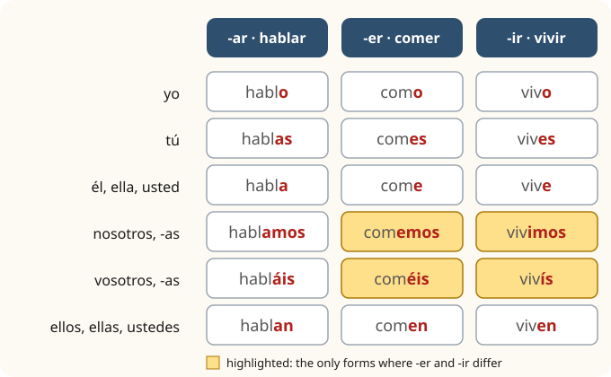

Lesson 6: The Present Tense of Regular Verbs¶
El presente de los verbos regulares
Until now you have used verbs as fixed phrases: me llamo, soy de, tengo veinte años. In this lesson you learn the system behind them. Spanish verbs change their ending to show who is doing the action: hablo is "I speak", hablas "you speak", hablamos "we speak". Because the ending already tells you the person, the pronoun is usually left out. There are three families of verbs, ending in -ar, -er and -ir, and once you know the pattern of each you can use hundreds of verbs. You will also learn to make sentences negative, to ask questions, and to use the question words.
Learning outcomes
By the end of this lesson you will be able to:
- conjugate regular -ar, -er and -ir verbs in the present tense;
- use about forty common regular verbs to talk about your everyday life;
- make a sentence negative with no;
- ask yes/no questions and questions with qué, quién, dónde, cuándo, cómo, cuánto, cuál and por qué;
- use the present for habits, for what is happening now and for the near future, and say how often you do things.
6.1 Dialogue: a language exchange¶
Daniel has found a partner for a language exchange (un intercambio): Javier, a student who wants to practise English. They meet in a café; the first half hour is in Spanish.
- Javier: Hola, Daniel. ¿Hablamos en español primero? — Hi, Daniel. Shall we speak Spanish first?
- Daniel: Sí, perfecto. Después hablamos en inglés. — Yes, perfect. Then we'll speak English.
- Javier: ¿Dónde vives? — Where do you live?
- Daniel: Vivo en un piso en el centro. ¿Y tú? — I live in a flat in the centre. And you?
- Javier: Vivo con mis padres, cerca de la universidad. Estudio medicina. — I live with my parents, near the university. I study medicine.
- Daniel: ¿Trabajas también? — Do you work as well?
- Javier: Sí, trabajo los sábados en una librería. ¿Y tú? — Yes, I work on Saturdays in a bookshop. And you?
- Daniel: No, no trabajo. Estudio español todas las mañanas. — No, I don't work. I study Spanish every morning.
- Javier: ¿Y por la tarde? — And in the afternoon?
- Daniel: Por la tarde leo, escribo correos y escucho música. A veces corro en el parque. — In the afternoon I read, write emails and listen to music. Sometimes I run in the park.
- Javier: ¿Comes en casa? — Do you eat at home?
- Daniel: Normalmente sí, pero los viernes como con mis compañeros en un restaurante. — Usually, yes, but on Fridays I eat with my classmates in a restaurant.
- Javier: ¿Qué idiomas hablas? — What languages do you speak?
- Daniel: Hablo inglés, claro, y un poco de francés. ¿Tú hablas francés? — English, of course, and a little French. Do you speak French?
- Javier: No, no hablo francés. Pero aprendo inglés en una academia. — No, I don't speak French. But I'm learning English at a language school.
- Daniel: ¿Comemos juntos el viernes? — Shall we have lunch together on Friday?
- Javier: ¡Vale! El viernes comemos juntos. — OK! On Friday we'll have lunch together.
Notice:
- The endings change with the person: vivo (I) but vives (you); como (I) but comes (you); hablamos (we).
- There is no word for "do" in questions or negatives: "Do you work?" is just ¿Trabajas?, and "I don't work" is No trabajo.
- One Spanish present covers several English forms: aprendo inglés is "I learn English" or "I'm learning English", and el viernes comemos juntos is "on Friday we're having lunch together".
6.2 Vocabulary: common regular verbs¶
-ar verbs (the largest family)¶
| Spanish | English | Spanish | English |
|---|---|---|---|
| hablar | to speak, talk | escuchar | to listen (to) |
| trabajar | to work | mirar | to look (at), watch |
| estudiar | to study | tomar | to take; to have (a drink) |
| comprar | to buy | necesitar | to need |
| cocinar | to cook | llegar | to arrive |
| desayunar | to have breakfast | esperar | to wait (for); to hope |
| cenar | to have dinner | llamar | to call, phone |
| bailar | to dance | viajar | to travel |
| cantar | to sing | visitar | to visit |
| enseñar | to teach; to show | ayudar | to help |
Table 6.1. Regular -ar verbs.
-er verbs¶
| Spanish | English | Spanish | English |
|---|---|---|---|
| comer | to eat; to have lunch | aprender | to learn |
| beber | to drink | comprender | to understand |
| leer | to read | correr | to run |
| vender | to sell | creer | to believe, think |
| deber | to have to, must; to owe | responder | to answer |
Table 6.2. Regular -er verbs.
-ir verbs¶
| Spanish | English | Spanish | English |
|---|---|---|---|
| vivir | to live | recibir | to receive, get |
| escribir | to write | compartir | to share |
| abrir | to open | subir | to go up, climb; to upload |
| decidir | to decide | asistir a | to attend |
Table 6.3. Regular -ir verbs.
Other useful words¶
| Spanish | English |
|---|---|
| el idioma, la lengua | language |
| la librería | bookshop (not library!) |
| la biblioteca | library |
| el compañero, la compañera | classmate, colleague, flatmate |
| el correo | email; post, mail |
| un poco de | a little (of) |
| juntos, juntas | together |
| vale | OK (Spain) |
Table 6.4. Other words from the dialogue.
False friends
la librería is a bookshop; a library is la biblioteca. Other traps among the verbs: asistir a means "to attend", not "to assist" (that is ayudar), and realizar means "to carry out", not "to realise". Words that look alike in two languages but mean different things are called false friends.
6.3 Grammar: the three conjugations¶
Every verb has a stem and an ending. In the dictionary form, the infinitive, the ending is -ar, -er or -ir: habl-ar, com-er, viv-ir. To make the present tense, take off the -ar, -er or -ir and add the ending for the person.

| Person | hablar | comer | vivir |
|---|---|---|---|
| yo | hablo | como | vivo |
| tú | hablas | comes | vives |
| él, ella, usted | habla | come | vive |
| nosotros, nosotras | hablamos | comemos | vivimos |
| vosotros, vosotras | habláis | coméis | vivís |
| ellos, ellas, ustedes | hablan | comen | viven |
Table 6.5. The present tense of regular verbs. Switch on Practice and fill in the endings.
- Hablo, hablas, habla, hablamos, habláis, hablan.
- Como, comes, come, comemos, coméis, comen.
- Vivo, vives, vive, vivimos, vivís, viven.
Five things make the table easier than it looks:
- The yo form always ends in -o, for all three families.
- The vowel of the family appears in the endings: a for -ar verbs, e for -er verbs.
- -er and -ir verbs share four endings. They differ only in the nosotros form (comemos / vivimos) and the vosotros form (coméis / vivís), where the -ir verbs keep their i.
- Usted goes with the él form, ustedes with the ellos form: ¿Habla usted inglés? ¿Viven ustedes aquí?
- The stress falls on the stem in four forms (HA-blo, HA-blas, HA-bla, HA-blan) and on the ending in the nosotros and vosotros forms (ha-BLA-mos, ha-BLÁIS). Do not stress the ending of hablo: habló, with the stress on the end, is a different tense (Lesson 15).
Common mistake: keeping the infinitive
Beginners often say yo hablar or yo hablo where Spanish only needs hablo. Drop the -ar, -er or -ir, add the ending, and leave out the pronoun unless you need it for emphasis or contrast: Yo trabajo y tú estudias.
Worked example: conjugating a new verb
Conjugate aprender ("to learn") for nosotros and for ellos.
- Family: -er. Stem: aprend-.
- nosotros: -emos → aprendemos, "we learn".
- ellos: -en → aprenden, "they learn".
Now the same with escribir: stem escrib-, -ir family → escribimos, escriben.
What the present tense means¶
The Spanish present covers more ground than the English present simple:
| Use | Example | English |
|---|---|---|
| habits and routines | Trabajo los sábados. | I work on Saturdays. |
| facts | Los españoles cenan tarde. | Spaniards have dinner late. |
| what is happening now | ¿Qué lees? — Leo una novela. | What are you reading? — I'm reading a novel. |
| the near future, with a time word | Mañana visito a mi abuela. | Tomorrow I'm visiting my grandmother. |
| suggestions, in questions | ¿Tomamos un café? | Shall we have a coffee? |
Table 6.6. The uses of the present tense.
Personal a
When the object of a verb is a specific person, Spanish puts a before it: Visito a mi abuela ("I visit my grandmother"), Llamo a Javier, Ayudo a mis padres. It is not translated. With things there is no a: Visito el museo.
6.4 Grammar: negatives, questions and question words¶
Negatives¶
To make a sentence negative, put no directly before the verb:
- Hablo francés. → No hablo francés. — I don't speak French.
- Mis padres viven aquí. → Mis padres no viven aquí. — My parents don't live here.
- ¿Trabajas? — No, no trabajo. — Do you work? — No, I don't. The first no answers the question; the second makes the verb negative.
Some negative words can come before the verb on their own, or after it with no in front. Unlike standard English, Spanish is happy with this double negative:
- Nunca como carne. = No como carne nunca. — I never eat meat.
- No bebo nada. — I don't drink anything. (literally "I don't drink nothing")
Yes/no questions¶
A yes/no question has the same words as a statement; only the voice rises at the end, and the writing adds ¿ ?:
- Hablas español. — You speak Spanish.
- ¿Hablas español? — Do you speak Spanish?
The subject, if there is one, can stay before the verb or go after it: ¿Tu hermano vive en Madrid? and ¿Vive tu hermano en Madrid? both mean "Does your brother live in Madrid?" To check something, add ¿verdad? or, in Spain, ¿no?: Vives en el centro, ¿verdad? ("You live in the centre, don't you?")
Question words¶
| Spanish | English | Example |
|---|---|---|
| ¿qué? | what? which? | ¿Qué estudias? — What do you study? |
| ¿quién?, ¿quiénes? | who? | ¿Quién habla? — Who's speaking? |
| ¿dónde? | where? | ¿Dónde vives? — Where do you live? |
| ¿adónde? | where to? | ¿Adónde viajas? — Where are you travelling to? |
| ¿de dónde? | where from? | ¿De dónde eres? — Where are you from? |
| ¿cuándo? | when? | ¿Cuándo llegas? — When do you arrive? |
| ¿cómo? | how? what … like? | ¿Cómo se llama? — What's his name? |
| ¿cuánto?, ¿cuánta? | how much? | ¿Cuánto cuesta? — How much is it? |
| ¿cuántos?, ¿cuántas? | how many? | ¿Cuántas lenguas hablas? — How many languages do you speak? |
| ¿cuál?, ¿cuáles? | which? what? | ¿Cuál es tu número? — What's your number? |
| ¿por qué? | why? | ¿Por qué estudias español? — Why are you studying Spanish? |
Table 6.7. Question words. All of them carry a written accent.
Three points:
- Accents. Every question word has a written accent, which distinguishes it from the same word used without a question: ¿Dónde vives? but la casa donde vivo ("the house where I live").
- Cuánto agrees with the noun: ¿Cuántos libros?, ¿Cuántas personas?
- Por qué and porque. "Why?" is two words with an accent, ¿por qué?; "because" is one word without, porque: ¿Por qué estudias español? — Porque viajo mucho a México.
Qué or cuál?
Before a noun, use qué: ¿Qué idiomas hablas? Before ser, "what is…?" asking for a piece of information is usually ¿Cuál es…?: ¿Cuál es tu dirección? ("What is your address?"). ¿Qué es…? asks for a definition: ¿Qué es una librería? ("What is a librería?").
How often?¶
| Spanish | English |
|---|---|
| siempre | always |
| normalmente | usually |
| a menudo | often |
| a veces | sometimes |
| casi nunca | hardly ever |
| nunca | never |
| todos los días | every day |
| una vez a la semana | once a week |
| dos veces al mes | twice a month |
Table 6.8. Saying how often.
These words usually go at the beginning or the end of the sentence: A veces cocino yo. Corro en el parque dos veces a la semana.
A preview: verbs that change¶
Not every verb is regular. You have already met a few that change their stem: cuesta (from costar), empieza (from empezar), tengo (from tener). Their endings are still the ones in this lesson; only the stem changes. Lesson 10 explains them. For now, if a verb in this book is not marked as irregular, it follows the patterns of Table 6.5.
6.5 Practice¶
Conjugate¶
| Person | trabajar | beber | escribir |
|---|---|---|---|
| yo | trabajo | bebo | escribo |
| tú | trabajas | bebes | escribes |
| él, ella, usted | trabaja | bebe | escribe |
| nosotros, nosotras | trabajamos | bebemos | escribimos |
| vosotros, vosotras | trabajáis | bebéis | escribís |
| ellos, ellas, ustedes | trabajan | beben | escriben |
Table 6.9. Practice: three more verbs.
Questions and answers¶
Read each question and answer aloud. Then answer the questions about yourself.
- ¿Dónde vives? — Vivo en Londres. — Where do you live? — I live in London.
- ¿Qué idiomas hablas? — Hablo inglés y un poco de español. — What languages do you speak? — English and a little Spanish.
- ¿Trabajas o estudias? — Trabajo en un banco. — Do you work or study? — I work in a bank.
- ¿Cuándo estudias español? — Estudio por la noche. — When do you study Spanish? — I study at night.
- ¿Por qué aprendes español? — Porque viajo mucho. — Why are you learning Spanish? — Because I travel a lot.
- ¿Lees mucho? — Sí, leo todos los días. — Do you read a lot? — Yes, I read every day.
Say it
Describe a normal week in five sentences, using at least one -ar, one -er and one -ir verb, a negative, and a frequency word. For example:
Trabajo de lunes a viernes. Normalmente como en casa. Los sábados escribo correos y leo. A veces cocino para mis amigos. Nunca trabajo los domingos.
6.6 Culture: language exchanges and new verbs¶
Intercambios. In most Spanish-speaking cities you will find intercambios: meetings, in a bar or café or online, where people who want to practise each other's language talk for half the time in one language and half in the other. They are free, friendly and one of the best ways to use the Spanish of this book with real people. The usual first questions are exactly those of this lesson: ¿De dónde eres? ¿Dónde vives? ¿Trabajas o estudias? ¿Por qué aprendes español?
Saying OK. Spaniards say vale dozens of times a day; it is the Spanish "OK". In Mexico you will hear sale among friends, in Argentina and Uruguay dale, and almost everywhere bueno or de acuerdo, which is also the neutral choice. "OK" itself is widely used too.
New verbs are -ar verbs. When Spanish makes a new verb, almost always from English, it joins the -ar family and is perfectly regular: chatear ("to chat online"), tuitear, escanear, googlear. So once you know hablar, you can already conjugate verbs that did not exist a few decades ago: chateo, chateas, chatea…
Living at home. Javier, in the dialogue, lives with his parents while he studies. This is common in Spain and in much of Latin America, where many students attend a university in their own city and young people often live in the family home until they are working or married. Saying vivo con mis padres at twenty-five carries no embarrassment.
Formal questions. When you speak to someone as usted, the verb is the él form, so questions can be ambiguous: ¿Habla inglés? can mean "Does he speak English?" or "Do you speak English?" Spanish speakers add usted when they need to be clear, especially in shops and offices: ¿Habla usted inglés?
6.7 Summary¶
Summary
- Regular present tense: stem + ending. -ar: -o, -as, -a, -amos, -áis, -an. -er: -o, -es, -e, -emos, -éis, -en. -ir: -o, -es, -e, -imos, -ís, -en.
- Usted takes the él form; ustedes the ellos form. Pronouns are usually left out.
- Uses: habits, facts, what is happening now, the near future with a time word, suggestions (¿Tomamos un café?).
- Negatives: no before the verb. Double negatives are normal: No como carne nunca.
- Questions: same word order, rising voice, ¿ ? in writing. Question words have accents: qué, quién, dónde, cuándo, cómo, cuánto, cuál, por qué. Because = porque.
- Frequency: siempre, normalmente, a menudo, a veces, casi nunca, nunca, todos los días.
6.8 Exercises¶
Exercise 1
Conjugate estudiar for tú.
Answer
estudias. estudias
Exercise 2
Conjugate vivir for nosotros.
Answer
vivimos. vivimos. -ir verbs keep the i in the nosotros form.
Exercise 3
Conjugate leer for ellos.
Answer
leen. leen. The stem le- plus the ending -en.
Exercise 4
Complete: ¿Usted ___ (trabajar) aquí?
Answer
trabaja. ¿Usted trabaja aquí? Usted takes the él form.
Exercise 5
Make negative: Bebo café.
Answer
No bebo café. No bebo café.
Exercise 6
Choose the question word: ¿___ vives? — En Sevilla.
Answer
Dónde. ¿Dónde vives?
Exercise 7
Complete with por qué or porque: ¿___ estudias español? — ___ trabajo en México.
Answer
¿Por qué estudias español? — Porque trabajo en México. The question word is two words with an accent; "because" is one word.
Exercise 8
Translate: "We eat at home on Sundays."
Answer
Los domingos comemos en casa. Los domingos comemos en casa. (Or Comemos en casa los domingos.)
Exercise 9
Translate: (a) Do you (tú) speak English? (b) My parents don't live in Madrid. (c) I never drink coffee. (d) How many languages does Ana speak?
Answer
(a) ¿Hablas inglés? (b) Mis padres no viven en Madrid. (c) Nunca bebo café. or No bebo café nunca. (d) ¿Cuántos idiomas habla Ana? or ¿Cuántas lenguas habla Ana?
Exercise 10
Correct the mistakes: Yo vivir en Londres. ¿Tú trabajar en una biblioteca? Ella no lee nunca porqué no tiene tiempo.
Answer
Vivo en Londres. ¿Trabajas en una biblioteca? Ella no lee nunca porque no tiene tiempo. Conjugate the verbs, and write porque, "because", as one word without an accent.
6.9 Quiz¶
Quiz: the present tense of regular verbs
Exercise 11
Nosotros ___ en un piso pequeño.
- vivemos
- vivimos
- viven
- vivís
Answer
vivimos
-ir verbs have -imos in the nosotros form.
Exercise 12
¿___ usted inglés?
- Hablas
- Habla
- Hablo
- Hablan
Answer
Habla
Usted takes the él form of the verb.
Exercise 13
Mis amigos ___ (comer) en casa y yo ___ (comer) en un restaurante.
Answer
comen · como
Exercise 14
¿Vosotros ___ (aprender) inglés?
Answer
aprendéis / aprendeis
The vosotros ending of -er verbs is -éis.
Exercise 15
Translate: "I don't work on Saturdays."
Answer
No trabajo los sábados / Los sábados no trabajo / Yo no trabajo los sábados
Exercise 16
Match each question word to its meaning.
| A | B |
|---|---|
| ¿cuándo? | how many? |
| ¿quién? | why? |
| ¿cuántos? | when? |
| ¿por qué? | who? |
Answer
¿cuándo? — when?; ¿quién? — who?; ¿cuántos? — how many?; ¿por qué? — why?
Exercise 17
Put the words in order: "Where do your parents live?"
Words: viven / padres? / tus / ¿Dónde
Answer
¿Dónde viven tus padres?
Exercise 18
Tap the wrong word.
Estudio español porqué viajo mucho.
Answer
Wrong word: porqué.
Corrected: Estudio español porque viajo mucho.
"Because" is porque: one word, no accent.
Exercise 19
Write what you hear.
Dictation. Have someone read the sentence aloud, then write it down.
Normalmente leo y escucho música por la noche.
Answer
Normalmente leo y escucho música por la noche.
Exercise 20
Say it aloud.
Vivo en el centro y trabajo en una librería.
Answer
Say: Vivo en el centro y trabajo en una librería.